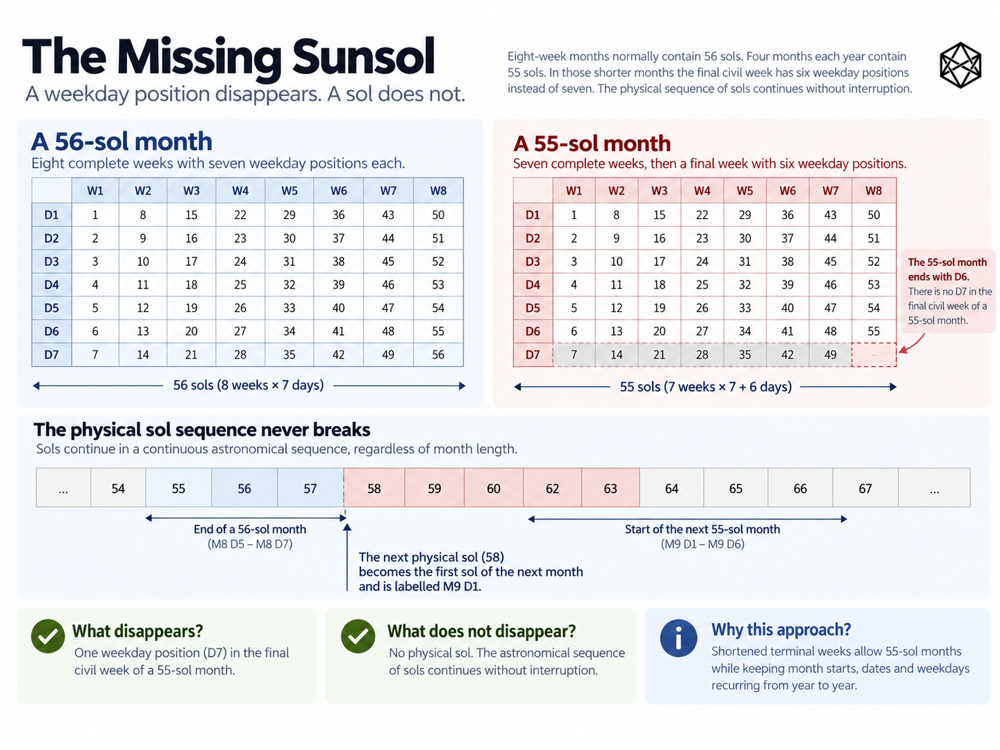

RECURRENCE
12) The Missing Sunsol
Sols, Weeks and Recurring Dates
A calendar can do strange things to labels. It cannot do strange things to Mars.
That distinction matters in Marian because one of its most visible structural features is easy to describe badly. In a shortened Marian month, the final civil week contains six weekday positions rather than seven, and the next physical sol begins the following month as the first weekday. Mars does not lose a rotation, elapsed time does not jump and human circadian rhythms do not skip a day.
The thing being interrupted is much narrower:
the seven-position civil weekday sequence.
Once that distinction is clear, the weekly mechanism is straightforward.
Start with the sol
The fundamental Marian civil unit is the Martian mean solar day, conventionally called a sol. It lasts approximately 24 hours, 39 minutes and 35 seconds in terrestrial time, close enough to an Earth day to serve naturally as the basic unit of daily civil life.
Marian takes the sol as given. It does not define a new Martian second, prescribe how the sol should be divided into hours or minutes, or determine local time zones. Those questions belong to horology and local timekeeping rather than to the calendar itself.
For present purposes, one physical sol passes, then another, then another. That sequence is continuous. The calendar assigns civil identities to those sols.
This distinction between physical succession and civil labelling is the key to everything that follows.
Marian uses a nominal seven-position civil week. The recommended weekday names are:
| Position | Recommended name |
|---|---|
| Day 1 | Monsol |
| Day 2 | Tuesol |
| Day 3 | Wedsol |
| Day 4 | Thursol |
| Day 5 | Frisol |
| Day 6 | Satsol |
| Day 7 | Sunsol |
The names are deliberately recognisable, but the structural identities are simply Day 1 through Day 7. Future communities could use different names without changing the calendar.
For most of the year, the sequence behaves exactly as a seven-day terrestrial week would suggest:
Monsol → Tuesol → Wedsol → Thursol → Frisol → Satsol → Sunsol → Monsol
A complete week contains seven consecutive physical sols and seven civil weekday positions. A 56-sol month therefore contains exactly eight complete weeks:
56 = 8 × 7
Weeks 1 through 8 each run from Monsol to Sunsol. The Sunsol of Week 8 is the 56th and final sol of the month, and the next physical sol begins the following month as Monsol. In a 56-sol month, physical succession and civil weekday succession therefore align perfectly across the boundary.

Detailed figure description
The upper pair of calendar grids compares an eight-week 56-sol month with a 55-sol month. In the complete month, Week 8 ends with the seventh weekday, Sunsol. In the shorter month, Week 8 stops at its sixth weekday, Satsol; the following physical sol is the Monsol of the next month. A lower sequence of consecutive numbered physical sols illustrates that elapsed sols are never removed. The lower notes distinguish the missing weekday label from an omitted physical day.
Editorial note: this is a descriptive summary, not an independently verified transcription of every diagram label. Refer to the surrounding text and the Marian technical specification for authoritative numeric details where applicable.
The interesting case is the 55-sol month.
The 55-sol boundary
A 55-sol month is one sol shorter than eight complete seven-sol weeks. The first seven weeks are ordinary:
7 × 7 = 49 sols
That leaves six physical sols. They occupy the first six weekday positions of Week 8:
| Week 8 position | Civil weekday | Sol within month |
|---|---|---|
| Day 1 | Monsol | 50 |
| Day 2 | Tuesol | 51 |
| Day 3 | Wedsol | 52 |
| Day 4 | Thursol | 53 |
| Day 5 | Frisol | 54 |
| Day 6 | Satsol | 55 |
| Day 7 | Sunsol | — |
The month therefore ends on Satsol. The following physical sol begins the next month as:
Week 1 · Monsol · Day 1
There is no intervening Sunsol civil label. A 55-sol month terminates after Day 6 of Week 8, and the next physical sol begins the new month at Day 1.
Nothing more exotic is happening.
To make the boundary explicit, imagine a continuous physical-sol count running underneath the civil calendar:
| Continuous physical sol | Marian civil label |
|---|---|
| 1,001 | Month 3 · Week 8 · Monsol |
| 1,002 | Month 3 · Week 8 · Tuesol |
| 1,003 | Month 3 · Week 8 · Wedsol |
| 1,004 | Month 3 · Week 8 · Thursol |
| 1,005 | Month 3 · Week 8 · Frisol |
| 1,006 | Month 3 · Week 8 · Satsol |
| 1,007 | Month 4 · Week 1 · Monsol |
| 1,008 | Month 4 · Week 1 · Tuesol |
Physical sol 1,007 exists exactly as it would under any other calendar. It lasts the same amount of time; Mars rotates normally and the Sun rises and sets normally. What that sol does not receive is the civil label Sunsol. Because a new month has begun, its Marian civil label is Monsol.
This is what Marian means by a shortened terminal civil week.
The physical sequence is continuous. The weekday naming sequence is not.
In an ordinary week, the civil positions follow:
Day 1 → Day 2 → Day 3 → Day 4 → Day 5 → Day 6 → Day 7 → Day 1
At the end of a 55-sol month, they instead follow:
Day 1 → Day 2 → Day 3 → Day 4 → Day 5 → Day 6 → Day 1
Day 7 is not assigned at that boundary. The Marian weekday sequence is therefore not a continuous modulo-seven counter across the entire year.
That is the structural fact.
The precise statement is:
The Sunsol weekday position is absent from the shortened terminal civil week. The next physical sol is labelled Monsol because it begins the following month.
That is a discontinuity in civil weekday naming, not a discontinuity in time.
What the restart buys
The restart gives Marian its recurring-date structure. Every month begins on Day 1 — conventionally Monsol — so the internal relationship among month, week and weekday does not drift.
Week 1, Day 1 is always Monsol. Week 2, Day 4 is always Thursol. Week 5, Day 6 is always Satsol. Wherever a numerical date is valid, its weekday identity is fixed.
A recurring Marian date therefore does not need its weekday recalculated each year. A meeting on Month 5, Week 3, Wedsol remains on that weekday. A statutory deadline on Month 8, Week 4, Frisol remains Frisol. A school term beginning on Month 1, Week 1, Monsol always begins at the same weekly position.
Every Marian month also has the same basic internal layout: eight nominal week positions.
A 56-sol month has:
8 × 7 = 56 sols
All eight positions are complete.
A 55-sol month has:
7 × 7 + 6 = 55 sols
Weeks 1 through 7 are complete, while Week 8 contains Days 1 through 6. The two month forms therefore differ at exactly one civil position:
Week 8, Day 7.
Everything before it is identical.
That is the principal structural benefit of the mechanism. Marian does not require a different weekly layout for every month or every year.
Common and leap years
A common Marian year contains four 55-sol months: Months 3, 6, 9 and 12. Each ends with a six-position terminal civil week. The remaining eight months contain 56 sols and end with complete seven-position weeks.
Across the common year, Marian therefore contains:
- 92 complete seven-sol civil weeks
- 4 six-position terminal civil weeks
- 96 nominal week positions
- 668 physical sols
The arithmetic is:
92 × 7 + 4 × 6 = 668
This is why saying simply that Marian has “96 weeks” would be imprecise. It has 96 nominal week positions, four of which are shortened in a common year.
A Marian leap year contains one additional sol, and it appears at one place only:
Month 12 · Week 8 · Day 7
The normally absent Sunsol at the end of Month 12 therefore exists in a leap year, completing the final terminal week.
The leap year consequently contains:
- 93 complete seven-sol civil weeks
- 3 six-position terminal civil weeks
- 96 nominal week positions
- 669 physical sols
The arithmetic is:
93 × 7 + 3 × 6 = 669
Months 1 through 11 are unchanged. Months 3, 6 and 9 still end after Satsol of Week 8; Month 12 does not. In a leap year, its Week 8 reaches Sunsol before the new year begins.
The leap-year change therefore affects only the final civil date position of the year. Every earlier valid date retains the same structural position in common and leap years.
At the weekly level, Marian consequently has only two annual templates:
| Year type | Physical sols | Nominal week positions | Complete seven-sol weeks | Shortened terminal weeks |
|---|---|---|---|---|
| Common | 668 | 96 | 92 | 4 |
| Leap | 669 | 96 | 93 | 3 |
The difference between them is concentrated at the final Sunsol of Month 12.
Dates carry more structure
The Marian arrangement changes what a date itself can tell us.
Consider an Earth date:
14 September 2038
The date identifies its position in the year, but it does not tell you its weekday unless you already know or calculate the calendar for 2038.
A Marian structural date contains more of that relationship intrinsically. For example:
Month 7 · Week 3 · Day 4
Day 4 always occupies the same weekly position. If the recommended names are being used, it is always Thursol. The date therefore identifies both annual position and weekly position without an additional lookup.
That difference is less dramatic in an age of software than it would once have been. A phone can calculate the weekday of any Gregorian date almost instantly. But institutions repeat calendars at scale. Schools, maintenance systems, payroll, transport, public administration and contractual schedules repeatedly map dates onto weekly patterns.
Marian removes one class of annual variation from those structures.
That is what fixed recurrence buys.
Civil week and continuous seven-sol count
One final distinction prevents unnecessary confusion.
A Marian civil week is part of the calendar. It has seven possible weekday positions, but selected terminal weeks contain only six of them.
A continuous seven-sol interval is simply elapsed time. Take any physical sol and count seven consecutive rotations: nothing in Marian prevents that calculation or changes its duration.
An institution that required an uninterrupted seven-sol operating count could maintain one independently. It would simply cease to align permanently with Marian weekday names after shortened month boundaries.
That possibility does not change the core civil calendar, but it shows why the phrase “Marian breaks the week” needs precision. Marian interrupts continuous civil weekday succession. It does not alter the duration of seven physical sols.
The whole mechanism can therefore be stated in one sentence:
Physical sols proceed continuously; Marian normally labels them through a seven-position Monsol-to-Sunsol week, but a 55-sol month ends after Satsol of Week 8 and the next physical sol begins the following month as Monsol.
Nothing else stops.
Marian changes the labels so that the calendar can repeat. It does not change Mars.